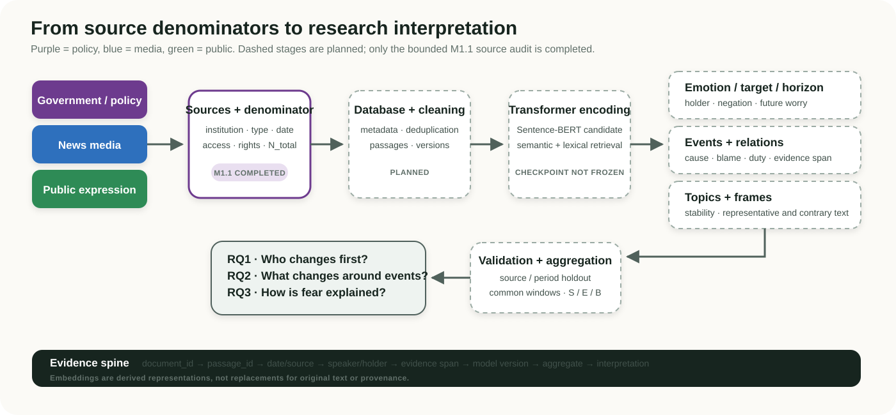
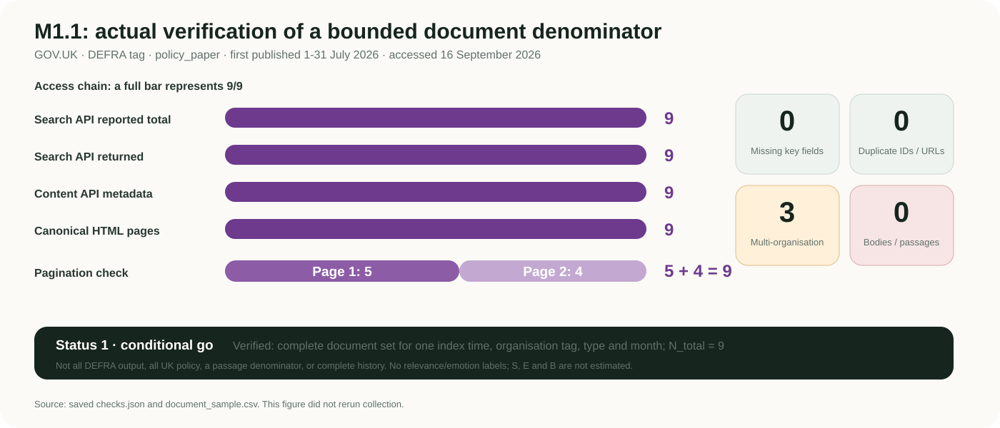

Group meeting · 16 September 2026
Fear of Temperature
Research direction and initial source-feasibility progress
Computational analysis of policy, media and public climate emotions
The topic has not changed: how policy, media and public communication express fear of rising temperatures, who changes first, what changes around events and how responsibility is explained. The method moves from keyword/Ngram exploration towards a traceable corpus, validated semantic retrieval and bounded temporal analysis. Lexical and TF-IDF approaches remain baselines; 1988 is an IPCC-related collection anchor, not an emotional origin.
Completed this week: nine July 2026 GOV.UK policy_paper records tagged to DEFRA. Reported/returned: 9/9; pagination: 5 + 4; accessible API and pages: 9/9; missing and duplicate key fields: 0. This supports one bounded document denominator only. Retained bodies: 0; no emotion or temporal result exists.
Dai Pan · Supervisor: Mashhuda Glencross · Progress report, not a completed model study
01 / 07Research transition
The research question is unchanged; the evidence strategy is changing
| Earlier exploration | Current design | Reason |
|---|---|---|
| Dictionaries, keywords, Ngrams | Traceable corpus + semantic retrieval | Similar concerns use different language; the same word can occur in quotation, denial or unrelated text |
| Raw hit counts | S, E and derived B with aligned denominators | A hit count is not attention unless numerator and denominator share the eligible collection |
| Selected examples | Versioned queries, held-out validation, evidence spans | Reduces discretionary selection and preserves counterexamples |
| General negative sentiment | Emotion, target, horizon, holder, cause, blame and duty | Similarity is not intensity; a risk statement need not express fear |
Baseline retained
Dictionary and TF-IDF methods remain. A Transformer only counts as an improvement if held-out precision, recall, F1 and error analysis support it.
1988 boundary
The IPCC provides an institutional collection anchor, not the origin of fear or a demonstrated emotional breakpoint. The final comparison window depends on reliable overlap.
End-to-end evidence chain
Original evidence remains linked throughout the planned workflow

Figure 1. Design diagram. Only the bounded M1.1 source audit is completed; all dashed stages are planned.
Measures
S: relevant share of eligible units
E: future fear/worry within relevant text
B = S x E: derived joint share
Model boundary
Sentence-BERT is a retrieval candidate; GoEmotions is a dataset; spaCy/Stanza is not a complete responsibility system.
Evidence boundary
Publishing institution, quoted speaker and emotion holder remain separate. Evidence spans, negation, versions and counterexamples are retained.
Research questions
Three RQs connect timing, events and meaning
Compare leading, lagging, synchronous and feedback patterns across policy, media and public attention/emotion.
Planned: common-window S/E; cross-correlation; conditional VAR against an own-history baseline.
Estimate level and slope changes near independently dated heat, scientific or policy events.
Planned: segmented regression / ITS; window sensitivity; placebo dates; serial-dependence checks.
Trace affected groups, causes, blame, duties and threatened futures across roles.
Planned: evidence-linked relations; topics/frames; quotation and stance checks; contrary passages.
RQ1 without RQ3 gives curves without meaning; RQ3 alone cannot compare sequence; RQ2 links independently dated events to changes. The NLP components serve multiple RQs rather than mapping one model to one question.
Completed this week
M1.1 verified one bounded policy-document denominator

Figure 2. Saved engineering checks, not an emotion trend. No new collection was run for this report.
Updated 21 August; linked to DEFRA, DHSC and DfT. Publication and update dates differ.
Non-climate item: the denominator was not assembled from climate keyword hits.
Technical findings and limits
What the pilot established — and what remains unclaimed
Completed and confirmed
first_published_atworked as a filter, but was not populated in the search response; sorting by it returned HTTP 422.- The Content API supplied dates for verification and local sorting.
- 3/9 records had multiple organisations; the pilot counted each landing page once if DEFRA-tagged.
- Access time and evidence hashes were saved.
Technical implications
public_timestampcan reflect an update and cannot substitute for first publication.- An organisation tag is not exclusive authorship; cross-institution totals may double count.
- The index is a dynamic snapshot.
- One complete month does not prove 1988-2026 completeness.
Therefore the pilot cannot establish
Next week and decisions
21-27 September: 10-20 hours, strengthen measurement before expansion
Planned reading
Close: Sentence-BERT; Pihkala’s climate-emotion taxonomy.
Targeted: GoEmotions transfer limits; Brulle et al.’s temporal design.
Supervisor decisions requested
- 1988 anchor with final analysis restricted to common coverage?
- Joint records: all linked, lead-only or fractional weights?
- What supervision, ethics and rights record is needed before a three-document passage pilot?
- Prioritise coverage audit or freeze units/counting first?
Make the denominator, evidence location and validation chain defensible before running complex models. Next week does not commit to completing emotion models or VAR.
Five-minute speaking script · Markdown report · Evidence and build notes